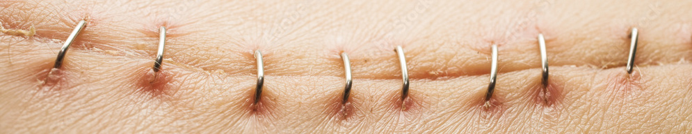

Skin is as much about what is kept in as what it keeps out.
It functions to edit, its existence determining that which will be included or excluded. Skin suggests the protection of a subject and the creation of an "other" that is forever standing on the outside. As skin wraps, covers, protects, it paradoxically wounds, occupies, and builds worlds.
Skin is a container. It is a peel that contains and cradles wildness. It gives shape to bodies. A break, tear, rupture, or cut in skin opens a portal and passageway. Here, too, is both a world and a wound.
Skin is both open and closed. Its presence suggests permanence, a border not meant to be crossed. Conversely, skin is permeable. It releases fluids and, at the same time, retains them.
Skin also helps us feel. When pressed against another, we recognize where we end and where another begins. In touching skin, we program the body, messy lines of memory that lead us toward each other and cause bodies to collide, sometimes gently, sometimes with a crash.

make a scar, heal a wound.